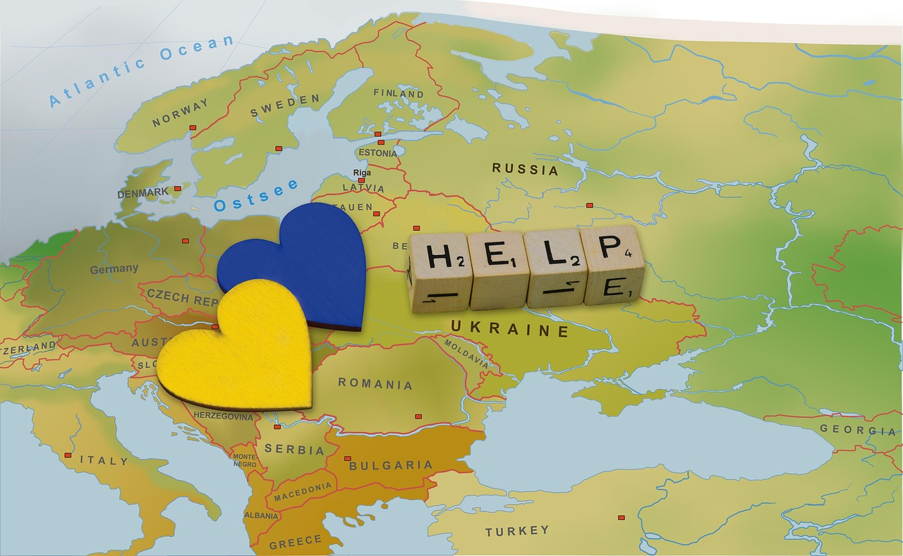

Global Operational Subsidiaries & Divisions
The Foundation maintains a structured international operational framework integrating specialized divisions and institutional subsidiaries responsible for sustainability research, infrastructure advancement, environmental coordination, humanitarian development, strategic partnerships, and global outreach initiatives.
 Water Infrastructure Division
Water Infrastructure Division
Responsible for engineering research, water purification innovation, regional infrastructure modernization, resource sustainability planning, and long-term water security development programs supporting sustainable infrastructure systems worldwide.
 Environmental Stewardship Division
Environmental Stewardship Division
Coordinates environmental sustainability initiatives, ecosystem restoration programs, climate resilience frameworks, ecological preservation operations, and environmental impact research supporting long-term global sustainability objectives.
 Humanitarian Logistics Division
Humanitarian Logistics Division
Develops coordinated humanitarian response systems, resource deployment operations, emergency infrastructure support, regional logistics planning, and international outreach initiatives supporting vulnerable communities.

Research & Innovation DivisionAdvances scientific innovation through infrastructure analytics, sustainability research, engineering development, technology integration, and multidisciplinary scientific collaboration supporting scalable global solutions.
 Strategic Partnership Division
Strategic Partnership Division
Maintains institutional relationships with governmental agencies, universities, international organizations, development institutions, private sector collaborators, and global sustainability networks.
 Governance & Compliance Division
Governance & Compliance Division
Supports organizational integrity through ethical governance systems, institutional accountability frameworks, regulatory compliance coordination, financial stewardship oversight, and operational transparency procedures.